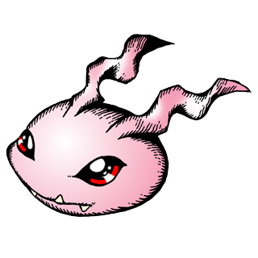
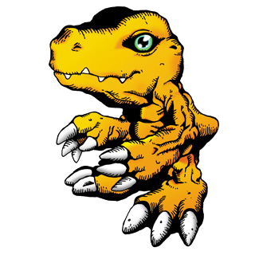
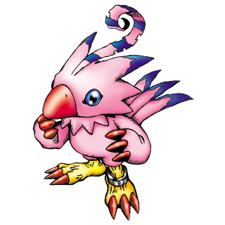
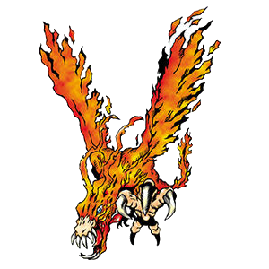
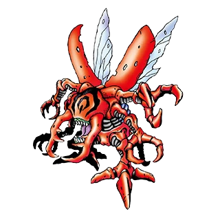

-
Koromon #001
- In Training
Um pequeno Digimon que derramou a penugem que cobria a sua superfície e cujo corpo ficou maior. Embora tenha se tornado capaz de se mover de forma mais ativa, ainda é incapaz de lutar. Ele pode criar bolhas da sua boca para intimidar os seus inimigos.
-
Agumon #002
- Rookie
É um Digimon Réptil que desenvolveu bipedismo e tem a aparência de um pequeno dinossauro. Por ainda estar a caminho da fase adulta, o seu poder é reduzido, no entanto, não entende o medo, por isso a sua personalidade é muito feroz. Cresceram-lhe afiadas e robustas garras em ambas as mãos e pés, cujo poder demonstra em batalha. Também prediz a evolução para um grande e poderoso Digimon. O seu movimento especial é cuspir fogo da boca para atacar o oponente (Baby Flame).
-
Greymon #003

- Champion
Um Digimon Dinosauro cuja pele craniana endureceu, de maneira a ficar coberta por uma carapaça parecida à de um besouro-rinoceronte. É um Digimon extremamente agressivo, com um corpo que é uma arma letal, repleta de garras afiadas e chifres gigantes. Contudo, é altamente inteligente e, se for domado, não deve haver monstro mais forte. O seu movimento especial Mega Flame consiste em cuspir chamas a elevadas temperaturas que reduzem tudo a cinzas.[7] Como os Greymons que habitam o Continente Folder não têm personalidades frenéticas, são capazes de usar estilos de luta que contam com a cooperação dos seus camaradas, por causa do seu grande inteleto.
-
Tsunomon #004

- In Training
Um pequeno Digimon que endureceu uma das antenas na sua cabeça como Punimon. A partir de Punimon, ele efetuou uma evolução mais animalesca e o seu corpo foi coberto por pelos maciços. Ele ainda está no auge da brincadeira e possui uma personalidade que ama diabruras, mas o seu instinto de luta não despertou.
-
Gabumon #005

- Rookie
Embora esteja coberto por um casaco de peles, é claramente um Digimon Réptil. Devido à sua natureza extremamente tímida e envergonhada, reúne dados que os Garurumons deixam para trás e torna-os num casaco de peles, para que os possa vestir. Por usar as peles de Garurumon, temido por outros Digimons, consegue salvaguardar a sua espécie, ao proteger o seu corpo. Quando tem o seu casaco vestido, a sua personalidade faz uma mudança de 180º. O seu movimento especial é Petit Fire.
-
Garurumon #006

- Champion
Coberto por um pelo azul, branco e prateado, é um Digimon Besta com a aparência de um lobo. Esse pelo é tão rijo como Mithril, um metal raro lendário, e como as lâminas que lhe crescem dos ombros têm extremidades afiadas, qualquer coisa que toquem é cortada em pedaços. Por possuir um furioso instinto de combate e tendões desenvolvidos em terras gélidas, bem como a óbvia agilidade de um carnívoro e a precisão para derrubar de forma segura os seus alvos, é um ser temido por outros Digimons. No entanto, é muito inteligente e obedece fielmente àquele que reconhece como seu mestre ou líder. O seu movimento especial é uma chama azul, a alta temperatura, que sopra da sua boca (Fox Fire).
-
Pyocomon #007
- In Training
Um Digimon Lesser de tipo Bolbo com uma grande flor a crescer da sua cabeça. Desloca-se habilmente fazendo uso de tentáculos semelhantes a raízes e consegue impelir-se uma ligeira altura para o ar; também por ser leve. É muito fofo vê-lo constantemente alerta, de tão curioso que é. Tem uma predisposição para a vida em grupos, ditos crescer muito rapidamente de número.
-
Piyomon #008
- Rookie
Um Digimon Pintainho cujas asas se desenvolveram de modo a parecerem braços. É capaz de manobrar as asas com destreza para agarrar objetos, mas, por esse motivo, não voa muito bem. Costuma viver no solo, mas quando o perigo bate à porta, escapa a voar. Contudo, visto que as suas habilidades de voo estão ao nível de Patamon, vê este como seu rival. O seu sonho é tornar-se em Birdramon, que é capaz de voar livremente, e parece não querer acabar da mesma forma que Cockatrimon, que não voa, de todo. A sua personalidade transborda curiosidade e adora bicar a cabeça de Tanemon. O seu movimento especial consiste em chamas etéreas (Magical Fire).[
-
Birdramon #009
- Champion
Um Digimon Ave Gigante envolto em chamas incandescentes. Foi gerado pela "Firewall" defensiva da Internet, tal como Meramon. Voa pelos céus ao bater as suas asas enormes. Apesar de não ser um Digimon minimamente beligerante, quando é atacado por inimigos, riposta furiosamente contra eles. O seu movimento especial é bater as asas e lançar as suas penas como meteoros.
-
Kuwagamon #010
- Champion
Um Digimon Inseto armado com enormes tenazes na cabeça. Tal como Kabuterimon, tem capacidades de batalha muito superiores às dos Digimons de espécies semelhantes que residem na Ilha File. Protegendo-se com a tenacidade e carapaça robusta, o inimigo que for agarrado pelas suas tenazes superpoderosas será apertado até dar o seu último suspiro. Mantém uma rivalidade perfeita com o Kabuterimon de atributo Vaccine e entre eles apenas existe conflito. O seu movimento especial corta facilmente através de materiais duros (Scissor Arms).